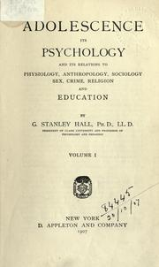

《青春期》
书·G. Stanley Hall, 1904·Adolescence: Its Psychology and Its Relations to Physiology, Anthropology, Sociology, Sex, Crime, Religion and Education (2 vols.)

两卷本巨著，第一次把青春期当作一个独立的发展阶段系统论述，提出“疾风怒涛”之说，影响很大，其中的许多观点后来被修订。中译名未核实，此处中文题名为直译或沿用旧数据。
- 作者
- G. Stanley Hall
- 年份
- 1904
- 难度
- 深读
- 类型
- 历史
- 所属学派
- 儿童研究运动
- 核心理论
- 青春期的“疾风怒涛”
版本
- 英文版 Adolescence: Its Psychology and Its Relations to Physiology, Anthropology, Sociology, Sex, Crime, Religion and Education (2 vols.) G. Stanley Hall · D. Appleton, first edition · 1904 Open Library ↗